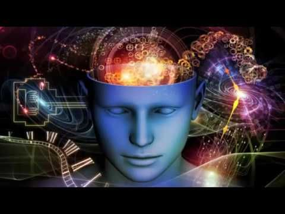
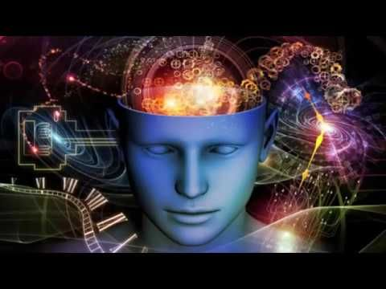

En la actualidad, la inteligencia artificial es muy conocida y sonada, tiene muchas ramas en las que se especializa; pero hoy quiero mostrarles los 4 tipos de inteligencia artificial mas comunes en el mundo.
1. Máquinas reactivas: Se trata del tipo de Inteligencia Artificial primigenio y el más experimentado por quienes desarrollan esta tecnología. Las máquinas reactivas son el concepto más cercano a la idea de robot implantada en el ideario colectivo: una máquina compleja capaz de cumplir eficientemente con una tarea concreta. La inteligencia de estas computadoras reside en su capacidad para percibir el mundo de forma directa y actuar sobre el presente de forma constante y sistemática, lo mismo que las condena a su principal debilidad. 2. Memoria limitada: El Tipo II maneja máquinas que pueden mirar hacia el pasado. Los vehículos autónomos ya hacen algo parecido. Por ejemplo, observan la velocidad y dirección de otros automóviles. Para que funcionen así hay que identificar objetos específicos y monitorearlos a lo largo del tiempo. Digamos que estas observaciones se agregan a las representaciones preprogramadas para la memoria de estos coches. Se incluyen marcas de carril, semáforos y otros elementos importantes, como curvas en la carretera. También se añaden experiencias como cuando el automóvil decide en qué momento cambiar de carril para evitar interrumpir a otro conductor o ser embestido por un automóvil cercano. 3. Teoría de la mente: Llegamos a un punto en el que nos acercamos más a los tipos de inteligencia artificial que deseamos en un futuro. Las máquinas de la siguiente clase son más avanzadas. No solo forman representaciones sobre el mundo, también sobre otros agentes o entidades. En psicología, esto se denomina ‘teoría de la mente’. Implica la comprensión de que las personas, las criaturas y los objetos en el mundo pueden tener pensamientos y emociones que afectan a su propio comportamiento. Esto es crucial para la forma en que los humanos formamos sociedades, porque nos permite la interacción social. 4. Autoconciencia: El paso final del desarrollo de la IA es construir sistemas que puedan formar representaciones sobre sí mismos. En última instancia, los investigadores de la IA tendrán que comprender no solo la conciencia, sino también construir máquinas que la tengan. Los seres conscientes son conscientes de sí mismos, conocen sus estados internos y pueden predecir los sentimientos de los demás. Es probable que estemos lejos de crear máquinas que sean conscientes de sí mismas. Sin embargo, los esfuerzos se enfocan hacia la comprensión de la memoria, el aprendizaje y la capacidad de basar las decisiones en experiencias pasadas.
 
